把信念走成路——写在长征胜利九十周年 把信念走成路.jpg 王翚《太行山色》（1669）：层峦叠嶂的太行秋色，呼应红军跋涉的万里征途 大都会艺术博物馆 · The Met Open Access (CC0) · The Colors of Mount Taihang (dated 1669)
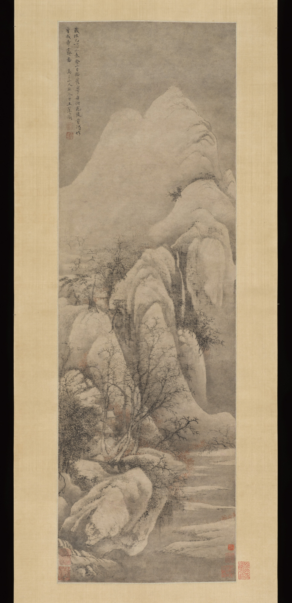
把信念走成路——写在长征胜利九十周年 把信念走成路02.jpg 王翚《仿李成雪霁图》（1669）：雪后初晴的寒山，呼应长征路上爬雪山过草地的艰辛 大都会艺术博物馆 · The Met Open Access (CC0) · Snow Clearing: Landscape after Li Cheng (dated 1669)
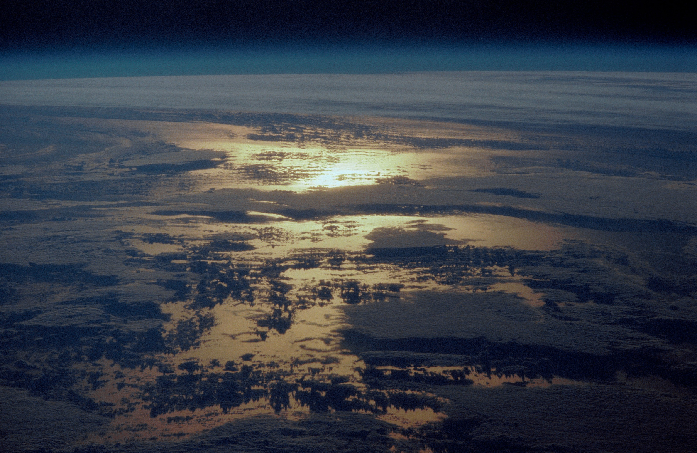
一线阳光穿云出——周恩来的长征路 一线阳光穿云出.jpg STS-36航天飞机航天员拍摄的地球云层阳光景象：一线阳光穿云而出，呼应周恩来在长征中的信念之光 NASA 影像库 · NASA 图片（公有领域，标注 NASA） · STS-36 Earth observation of sun beaming off cloud-covered ocean waters (1990-03-03T00:00:00Z)
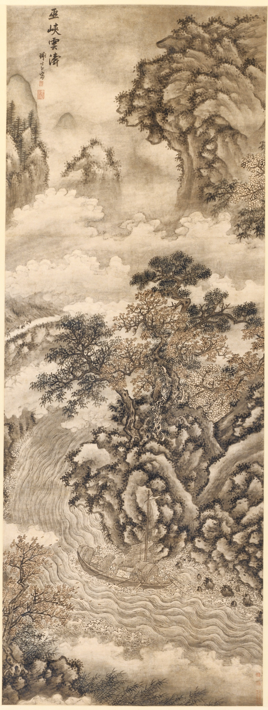
铁血征途映初心 大德无言照长征——朱德长征故事 铁血征途映初心.jpg 谢时臣《巫峡云涛》：长江峡谷云涛奔涌，呼应朱德亲临前线、力挽狂澜的赤水战场 克利夫兰艺术博物馆 · CC0 1.0（克利夫兰艺术博物馆） · Clouds and Waves at the Wu Gorge (c. 1547–67)
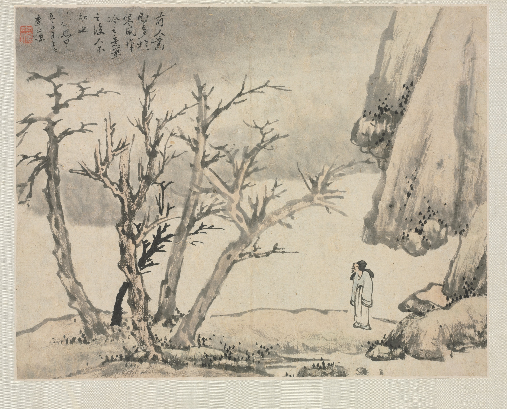
真理在谁手里——毛泽东长征小传 真理在谁手里.jpg 查士标《山水册·雪景》（1684）：雪岭寒林，呼应毛泽东在困顿中坚持真理、志薄昆仑的意象 克利夫兰艺术博物馆 · CC0 1.0（克利夫兰艺术博物馆） · Landscape Album in Various Styles: Snowy Landscape (1684)走好我们的新时代长征路（节选） 走好我们的新时代长征路.jpg NASA“发现”超级计算机机房：成排高性能计算系统，呼应天河超算与国防科研一线 NASA 影像库 · NASA 图片（公有领域，标注 NASA） · Discover Supercomputer 3 (2017-12-08T00:00:00Z)
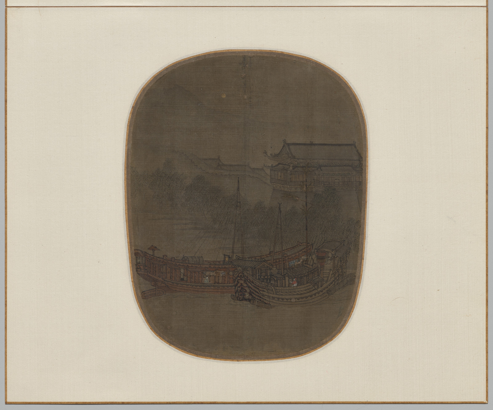
四渡赤水 四渡赤水.jpg 《城门外西湖泊船》（南宋）：舟楫泊渡、城垣人烟，呼应红军四渡赤水的渡口与机动 克利夫兰艺术博物馆 · CC0 1.0（克利夫兰艺术博物馆） · Boats at Anchor on West Lake at the City Gate (1150–1200)
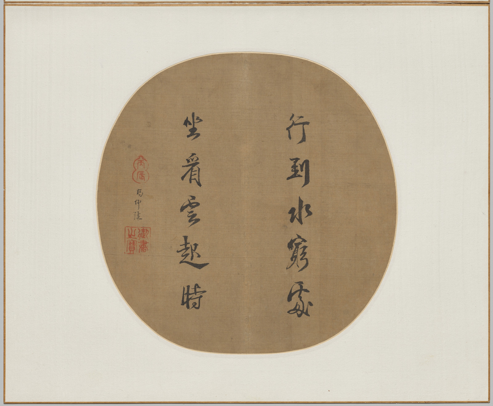
长征诗词选 长征诗词选.jpg 宋理宗草书王维诗（1256）：御笔草书长卷，呼应长征诗词选的书法气韵 克利夫兰艺术博物馆 · CC0 1.0（克利夫兰艺术博物馆） · Poem by Wang Wei in the Cursive Script Style (1256)
当浪潮已逝——战国时期的法家 当浪潮已逝02.jpg 西周青铜爵（大都会艺术博物馆）：礼乐重器，呼应法家兴起前旧制度的支柱 大都会艺术博物馆 · The Met Open Access (CC0) · Ritual Wine Vessel (Jue) (late 11th century BCE)
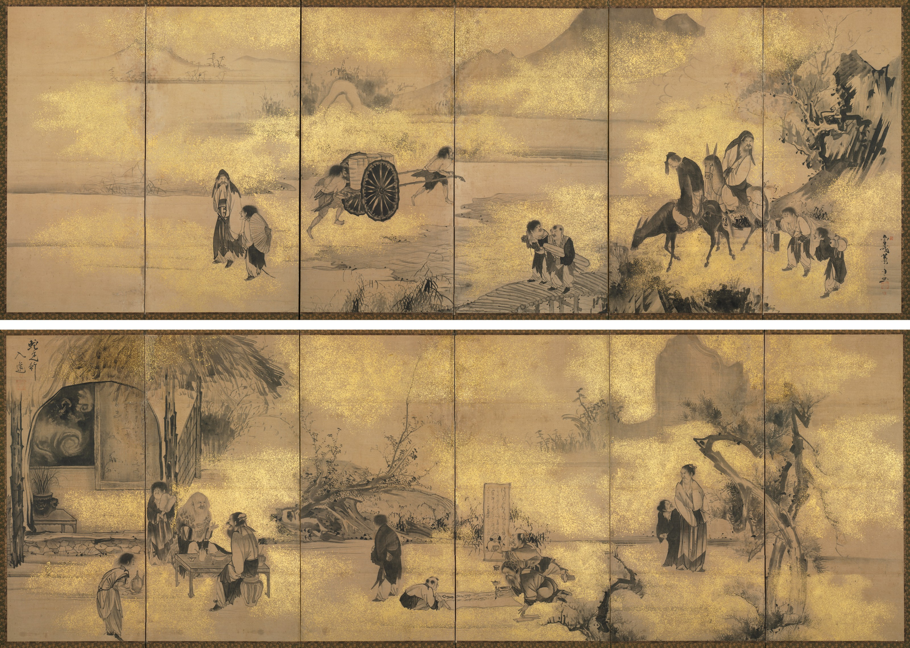
杜甫：一个不明不白的情圣 杜甫.jpg 曾我萧白《饮中八仙图》（18世纪）：取材杜甫《饮中八仙歌》，众酒仙醉态与本文杜甫的诗酒风流呼应 克利夫兰艺术博物馆 · CC0 1.0（克利夫兰艺术博物馆） · The Eight Immortals of the Wine Cup (later 1700s)
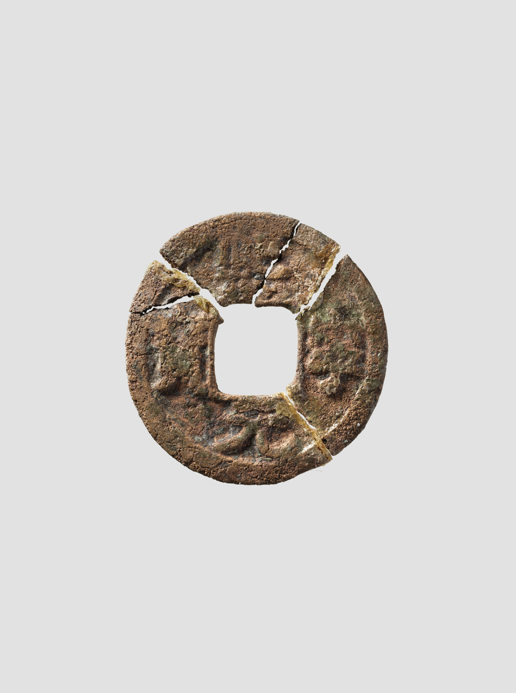
山西人的足迹 山西人的足迹.jpg 北宋熙宁铜钱（大都会艺术博物馆）：商路货殖之象征，呼应晋商足迹 大都会艺术博物馆 · The Met Open Access (CC0) · Coin (ca. 1068–77 CE)
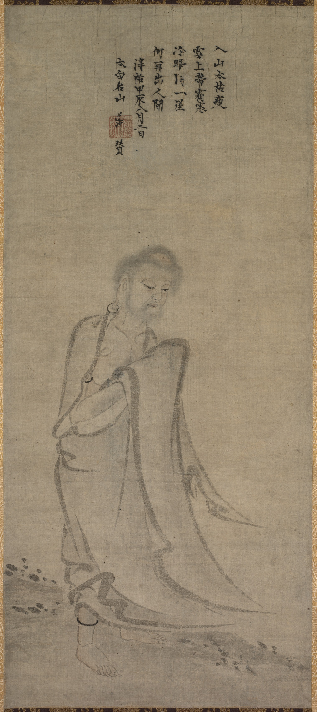
流浪者的悲鸣 流浪者的悲鸣.jpg 《出山释迦》（1244）：行者自荒寒山中走出，呼应流放关外、有家难归的流浪者 克利夫兰艺术博物馆 · CC0 1.0（克利夫兰艺术博物馆） · Shakyamuni Emerging from the Mountains (1244)
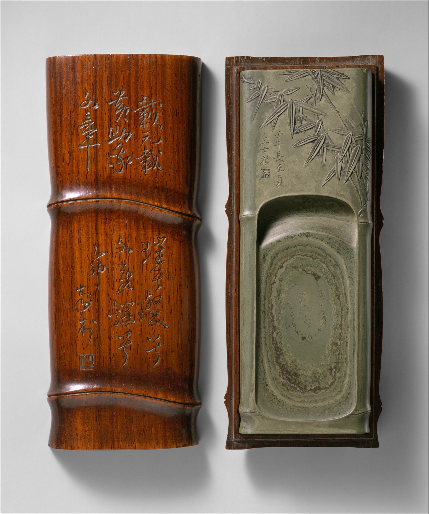
正当年华 正当年华.jpg 竹纹砚（大都会艺术博物馆，18世纪）：书生案头文房，呼应蔡元培与北大学人的书斋新风 大都会艺术博物馆 · The Met Open Access (CC0) · Inkstone with Bamboo Design (late 18th century)
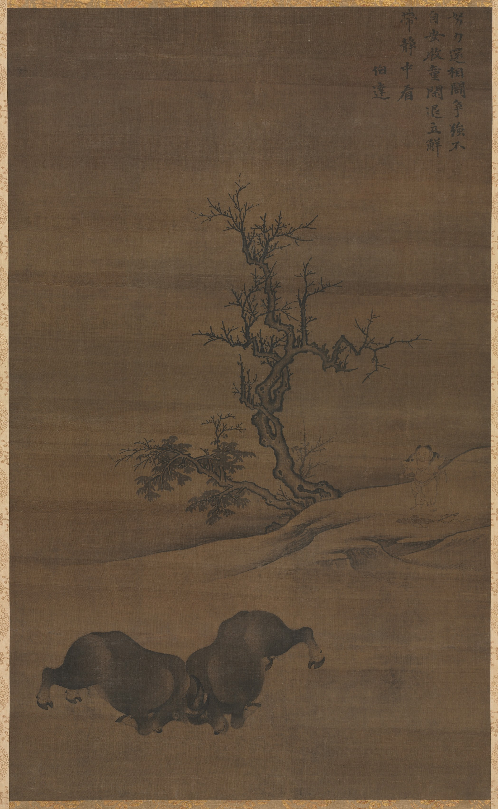
长江动物园 长江动物园.jpg 郭敏《牧牛图》（南宋）：牧人牵牛行于山林，呼应师生驱赶牲畜沿江西迁的队伍 克利夫兰艺术博物馆 · CC0 1.0（克利夫兰艺术博物馆） · Herdboys and Buffalo in Landscape (1200s)
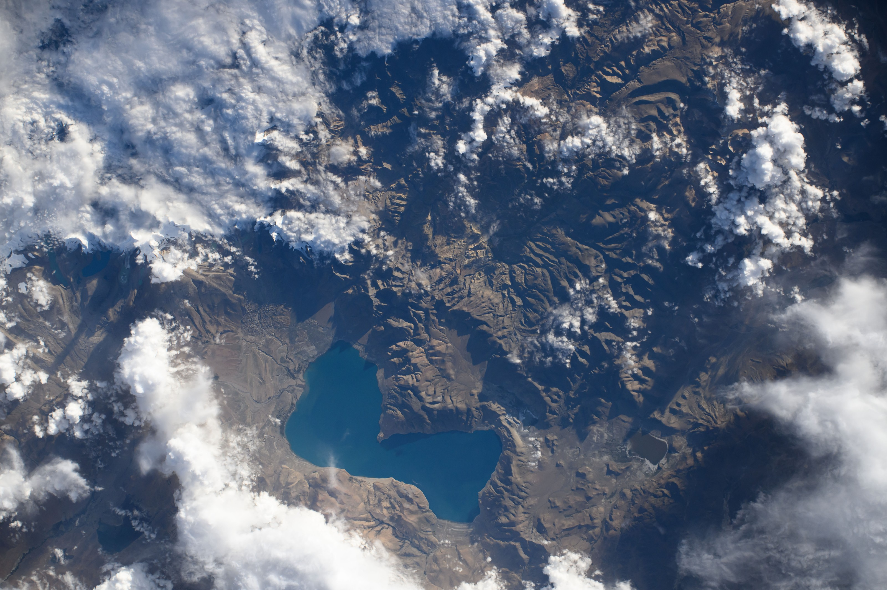
逃亡可可西里 逃亡可可西里.jpg NASA国际空间站拍摄的青藏高原佩枯错：高原湖泊与雪山相映，呼应可可西里无人区的纯净与严酷 NASA 影像库 · NASA 图片（公有领域，标注 NASA） · Lake Paiku in the Tibetan Plateau (2024-09-15T00:00:00Z)
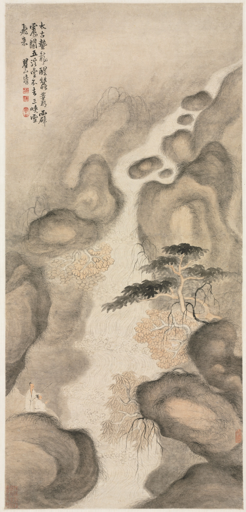
上山，下山 上山、下山.jpg 梅清《九龙潭》（1690年代）：黄山泉潭奇峰，呼应黄山轿夫日复一日的上山下山 克利夫兰艺术博物馆 · CC0 1.0（克利夫兰艺术博物馆） · Nine Dragon Pool (1690s)
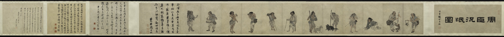
傻子 傻子.jpg 周臣《流民图》（1516，长卷）：市井流民百态，呼应无人记挂的“傻子”与被漠视的众生 克利夫兰艺术博物馆 · CC0 1.0（克利夫兰艺术博物馆） · Beggars and Street Characters (1516)
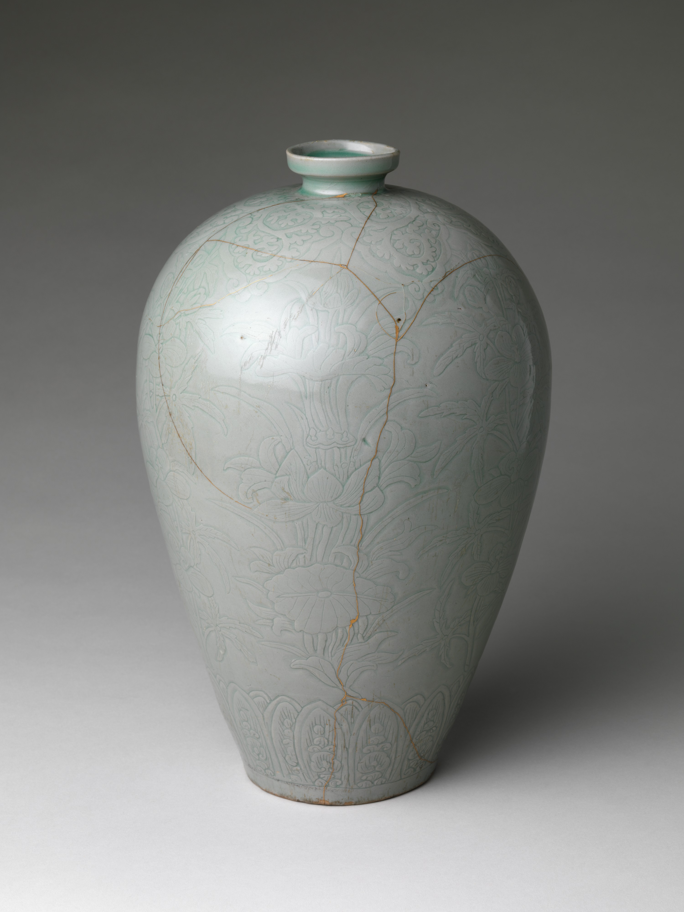
在韩国，政府和财阀谁是老大？ 在韩国、政府和财阀谁是老大.jpg 高丽王朝青瓷梅瓶（大都会艺术博物馆，11–12世纪）：韩国最具代表性的青瓷之美，呼应三星与财阀话题的韩国语境 大都会艺术博物馆 · The Met Open Access (CC0) · Maebyeong with lotus decoration (late 11th–early 12th century)
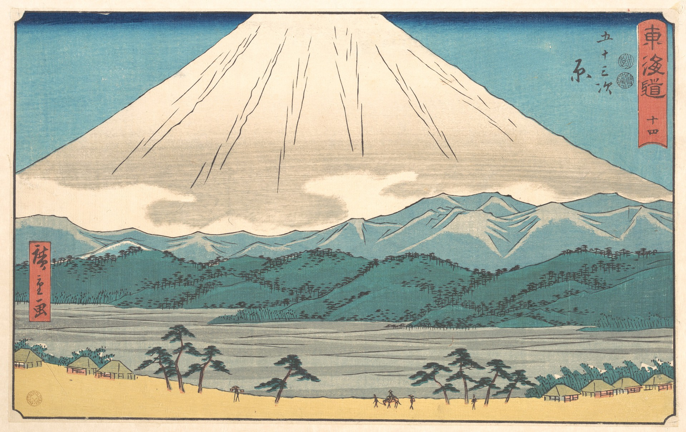
逐梦名古屋，同心向亚洲——第20届爱知·名古屋亚运会全景综述 逐梦名古屋、同心向亚洲.jpg 歌川广重《东海道五十三次·原》（1847–52）：驿路旅人与富士远山，呼应逐梦名古屋的亚洲旅程 大都会艺术博物馆 · The Met Open Access (CC0) · Hara, Number 14, from the series Fifty-Three Stations of the Tōkaidō Road (Tōkaidō gojūsan tsugi), also known as the Cle (1847–52)
杨树荣：大明湖畔最有腔调的大爷 杨树荣-大明湖畔最有腔调的大爷.jpg 唐光《红莲游鱼》：红莲亭亭、游鱼自在，呼应大明湖畔的荷韵与老人的松弛感 大都会艺术博物馆 · The Met Open Access (CC0) · Red lotus and fish ()
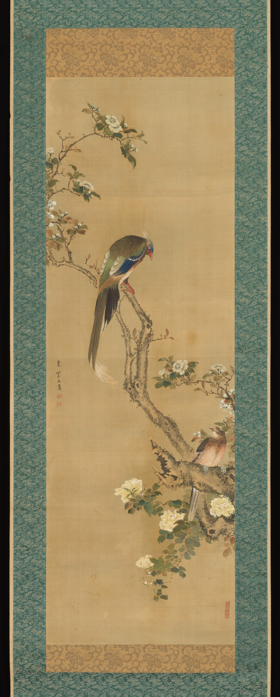
刘晓庆：一朵不败的小花 刘晓庆-一朵不败的小花.jpg 宋紫石《花鸟图》（18世纪）：花枝生机盎然，呼应“一朵不败的小花”的坚韧与灿烂 大都会艺术博物馆 · The Met Open Access (CC0) · Birds and Flowers (18th century)
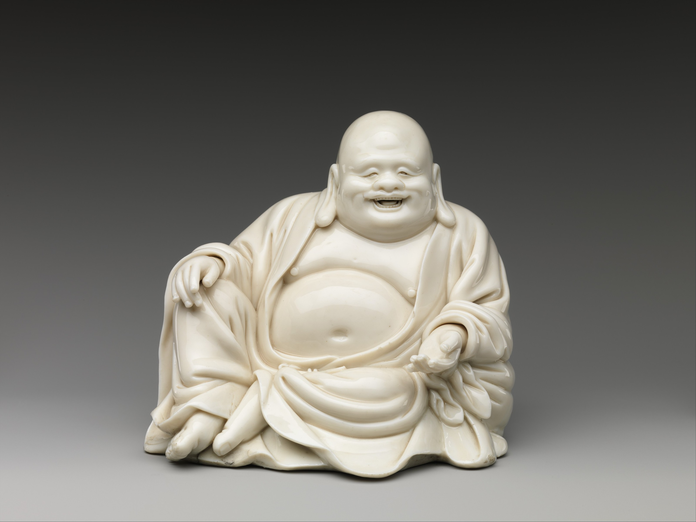
怀念游本昌：永远的济公 怀念游本昌-永远的济公.jpg 布袋和尚像（大都会艺术博物馆，17–18世纪）：袒腹憨笑的禅僧，呼应衣衫褴褛却心怀善意的济公形象 大都会艺术博物馆 · The Met Open Access (CC0) · Buddhist monk Budai (17th–18th century)
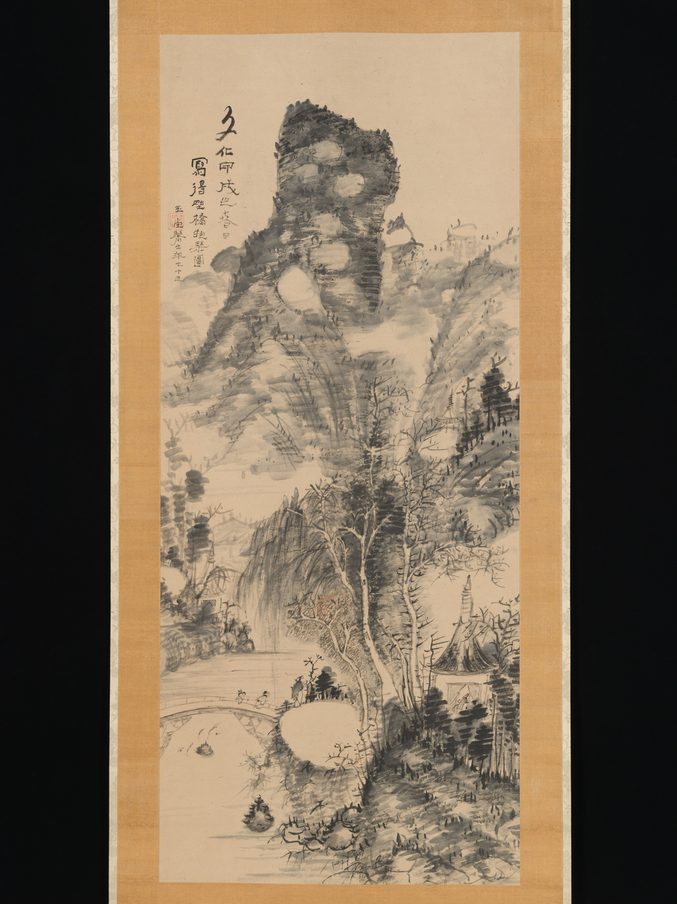
送别刘欢：心若在，梦就在 送别刘欢-心若在、梦就在.jpg 浦上玉堂《携琴过桥图》（1814）：携琴远行的旅人，呼应送别歌者、琴音犹在的意境 大都会艺术博物馆 · The Met Open Access (CC0) · On a Rustic Bridge, Carrying a Zither (1814)
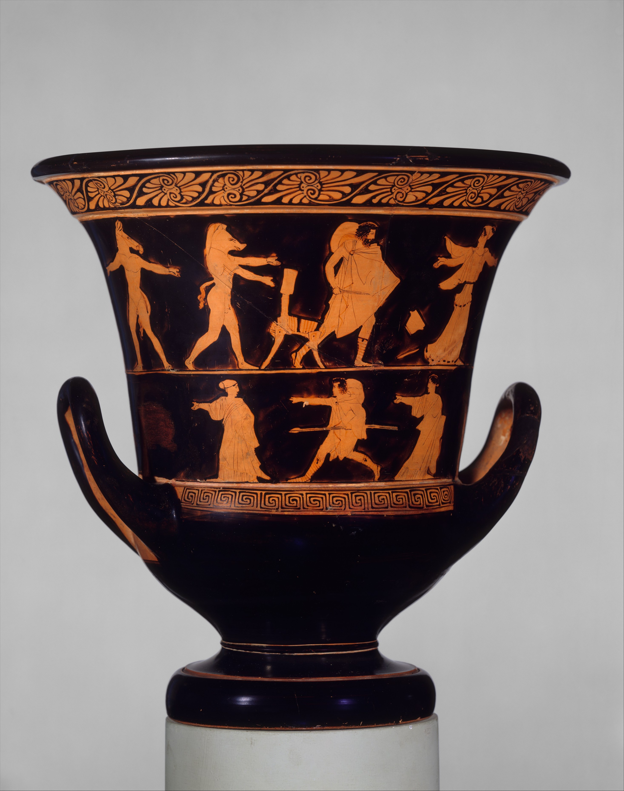
奥德赛：诺兰该如何驶过自己的地中海？ 奥德赛-诺兰该如何驶过自己的地中海.jpg 阿提卡红绘陶觚（大都会艺术博物馆，约公元前440年）：奥德修斯冥府对话场景，呼应诺兰镜头下的奥德赛 大都会艺术博物馆 · The Met Open Access (CC0) · Terracotta calyx-krater (bowl for mixing wine and water) (ca. 440 BCE)